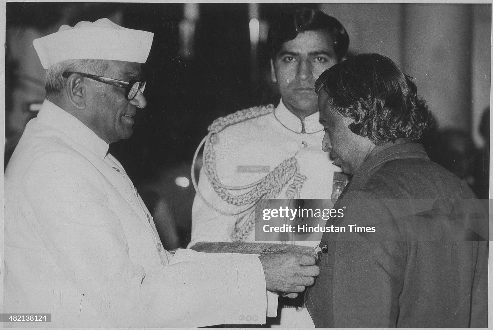
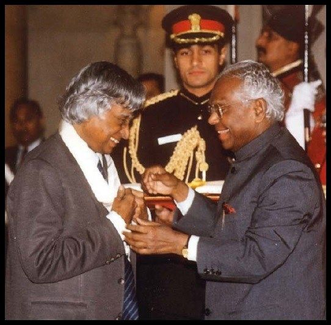
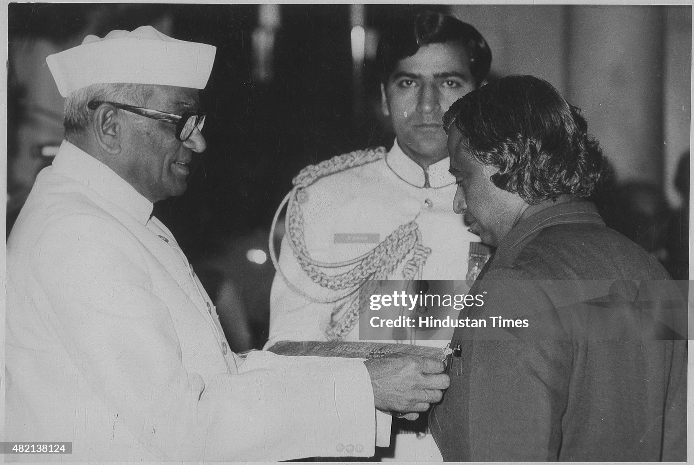
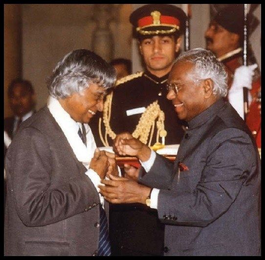
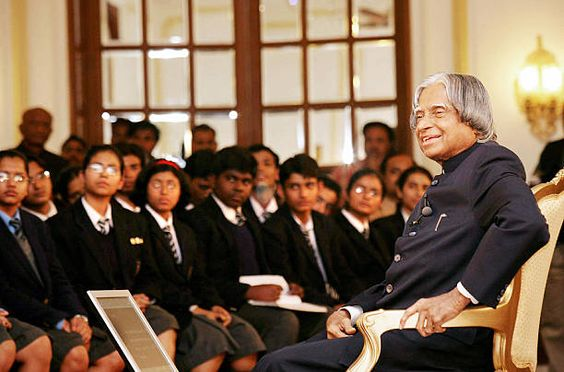
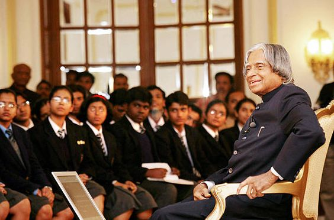

Biography
Dr.A.P.J. Abdul Kalam was born to a poor Tamil Muslim family. He lived with his family in the temple city of Tamilnadu,Rameswaram , where his father, Jainulabdeen, had a boat and was an imam of a local mosque. At the same time, his mother, Ashiamma, was a housewife. Kalam had four brothers and one sister in his family, from which he was the youngest. Kalam's ancestors were wealthy traders and landowners and had vast land and property tracts. But with time, their business of ferrying pilgrims and trading groceries suffered huge losses due to the Pamban Bridge's opening. As a result, Kalam's family had become inadequate and struggled hard to make a living. At a tender age, Kalam had to sell newspapers to supplement his family income.
In his school years, Kalam had average grades but was described as a bright and hardworking student who had a strong desire to learn. He spent hours on his studies, especially Mathematics. After completing his education at Schwartz Higher Secondary School, Ramanathapuram, Kalam went on to attend the St. Joseph's College, Tiruchirappalli from where he graduated in Physics in 1954.
Kalam moved to Madras in 1955 to study aerospace engineering in Madras Institute of Technology. While Kalam was working on a senior class project, the Dean was dissatisfied with his lack of progress and threatened to revoke his scholarship unless the project was finished within the next three days. Kalam met the deadline, impressing the Dean, who later said to him, "I was putting you under stress and asking you to meet a difficult deadline." He narrowly missed achieving his dream of becoming a fighter pilot, as he placed ninth in qualifiers, and only eight positions were available in the IAF.
He spent the next four decades as a scientist and science administrator, mainly at the Defence Research and Development Organisation (DRDO) and Indian Space Research Organisation (ISRO) and was intimately involved in India's civilian space programme and military missile development efforts. He thus came to be known as the Missile Man of India for his work on the development of ballistic missile and launch vehicle technology


 




 
